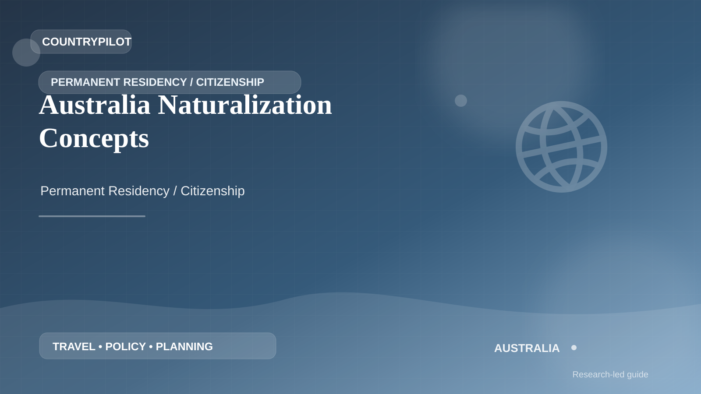

AustraliaAustralia · Permanent Residency / Citizenship
Australia Naturalization Concepts
For naturalization concepts in Australia, think in years rather than in forms. Residence history, absences, status, tax, employment or study records and family changes may matter long after they happen.